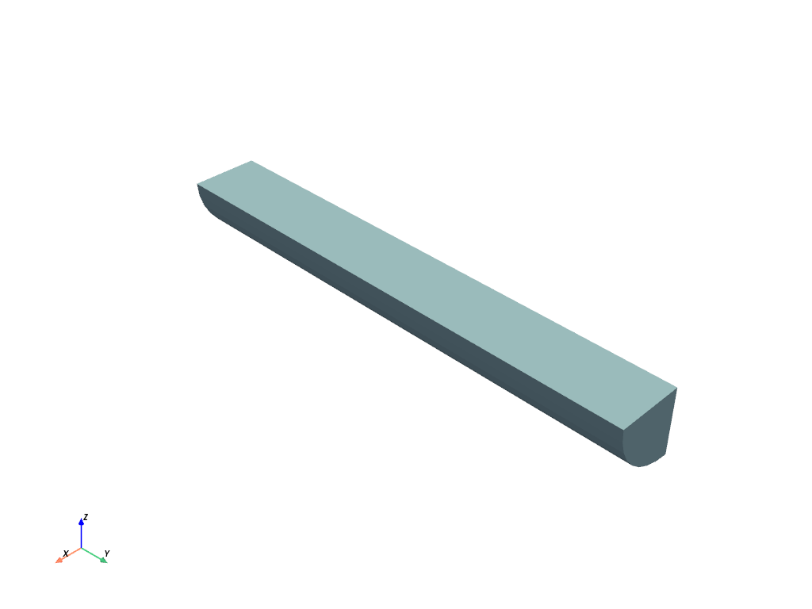
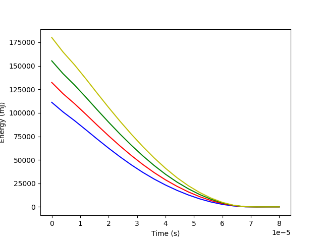

Note
Go to the end to download the full example code.
Taylor bar example#
This example is inspired by the “Taylor Bar” example on the LS-DYNA Knowledge Base site. It shows how to use PyDyna to create a keyword file for LS-DYNA and solve it within a Pythonic environment.
Perform required imports#
Import required packages, including those for the keywords, deck, and solver.
import os
import pathlib
import shutil
import tempfile
import ansys.dpf.core as dpf
import matplotlib.pyplot as plt
from ansys.dyna.core import Deck, keywords as kwd
from ansys.dyna.core.run import run_dyna
from ansys.dyna.core.utils.download_utilities import EXAMPLES_PATH, DownloadManager
workdir = tempfile.TemporaryDirectory()
mesh_file_name = "taylor_bar_mesh.k"
mesh_file = DownloadManager().download_file(
mesh_file_name, "ls-dyna", "Taylor_Bar", destination=os.path.join(EXAMPLES_PATH, "Taylor_Bar")
)
Create a deck and keywords#
Create a deck, which is the container for all the keywords. Then, create and append individual keywords to the deck.
def create_input_deck(initial_velocity):
deck = Deck()
deck.title = "Taylor-Bar Velocity - %s - Unit: t-mm-s" % initial_velocity
# Define material
mat_1 = kwd.Mat003(mid=1)
mat_1.ro = 7.85000e-9
mat_1.e = 150000.0
mat_1.pr = 0.34
mat_1.sigy = 390.0
mat_1.etan = 90.0
# Define section
sec_1 = kwd.SectionSolid(secid=1)
sec_1.elform = 1
# Define part
part_1 = kwd.Part(pid=1, mid=mat_1.mid, secid=sec_1.secid)
# Define coordinate system
cs_1 = kwd.DefineCoordinateSystem(cid=1)
cs_1.xl = 1.0
cs_1.yp = 1.0
# Define initial velocity
init_vel = kwd.InitialVelocityGeneration()
init_vel.id = part_1.parts["pid"][0]
init_vel.styp = 2
init_vel.vy = initial_velocity
init_vel.icid = cs_1.cid
# Define box for node set
box_1 = kwd.DefineBox(boxid=1, xmn=-500, xmx=500, ymn=39.0, ymx=40.1, zmn=-500, zmx=500)
# Create node set
set_node_1 = kwd.SetNodeGeneral()
set_node_1.sid = 1
set_node_1.option = "BOX"
set_node_1.e1 = box_1.boxid
# Define rigid wall
rw = kwd.RigidwallPlanar(id=1)
rw.nsid = set_node_1.sid
rw.yt = box_1.ymx
rw.yh = box_1.ymn
# Define control termination
control_term = kwd.ControlTermination(endtim=8.00000e-5, dtmin=0.001)
# Define database cards
deck_dt_out = 8.00000e-8
deck_glstat = kwd.DatabaseGlstat(dt=deck_dt_out, binary=3)
deck_matsum = kwd.DatabaseMatsum(dt=deck_dt_out, binary=3)
deck_nodout = kwd.DatabaseNodout(dt=deck_dt_out, binary=3)
deck_elout = kwd.DatabaseElout(dt=deck_dt_out, binary=3)
deck_rwforc = kwd.DatabaseRwforc(dt=deck_dt_out, binary=3)
deck_d3plot = kwd.DatabaseBinaryD3Plot(dt=4.00000e-6)
# Define deck history node
deck_hist_node_1 = kwd.DatabaseHistoryNodeSet()
deck_hist_node_1.id1 = set_node_1.sid
# Append all cards to input deck
deck.extend(
[
deck_glstat,
deck_matsum,
deck_nodout,
deck_elout,
deck_rwforc,
deck_d3plot,
set_node_1,
control_term,
rw,
box_1,
init_vel,
cs_1,
part_1,
mat_1,
sec_1,
deck_hist_node_1,
]
)
return deck
def write_input_deck(**kwargs):
initial_velocity = kwargs.get("initial_velocity")
wd = kwargs.get("wd")
if not all((initial_velocity, wd)):
raise Exception("Missing input!")
deck = create_input_deck(initial_velocity)
# Import mesh
deck.append(kwd.Include(filename=mesh_file_name))
# Write LS-DYNA input deck
os.makedirs(wd, exist_ok=True)
deck.export_file(os.path.join(wd, "input.k"))
shutil.copyfile(mesh_file, os.path.join(wd, mesh_file_name))
Define the Dyna solver function#
def run(directory):
run_dyna("input.k", working_directory=directory, stream=False)
assert os.path.isfile(os.path.join(directory, "d3plot")), "No result file found"
Define the DPF output function#
def get_global_ke(directory):
ds = dpf.DataSources()
result_file = os.path.join(directory, "d3plot")
assert os.path.isfile(result_file)
ds.set_result_file_path(result_file, "d3plot")
model = dpf.Model(ds)
gke_op = dpf.operators.result.global_kinetic_energy()
gke_op.inputs.data_sources.connect(ds)
gke = gke_op.eval()
field = gke.get_field(0)
ke_data = field.data
time_data = model.metadata.time_freq_support.time_frequencies.data_as_list
return time_data, ke_data
View the model#
etc etc
deck_for_graphic = create_input_deck(300e3)
deck_for_graphic.append(kwd.Include(filename=mesh_file))
deck_for_graphic.plot()

/home/runner/work/pydyna/pydyna/.venv/lib/python3.13/site-packages/ansys/dyna/core/lib/deck_plotter.py:567: PyVistaFutureWarning: The default value of `algorithm` for the filter
`UnstructuredGrid.extract_surface` will change in the future. It currently defaults to
`'dataset_surface'`, but will change to `None`. Explicitly set the `algorithm` keyword to
silence this warning.
plot_data = plot_data.extract_surface()
Run a parametric solve#
etc etc
# Define base working directory
color = ["b", "r", "g", "y"]
# Specify different velocities in mm/s
initial_velocities = [275.0e3, 300.0e3, 325.0e3, 350.0e3]
for index, initial_velocity in enumerate(initial_velocities):
# Create a folder for each parameter
wd = os.path.join(workdir.name, "tb_vel_%s" % initial_velocity)
pathlib.Path(wd).mkdir(exist_ok=True)
# Create LS-Dyna input deck
write_input_deck(initial_velocity=initial_velocity, wd=wd)
# Run Solver
run(wd)
# Run PyDPF Post
time_data, ke_data = get_global_ke(wd)
# Add series to the plot
plt.plot(time_data, ke_data, color[index], label="KE at vel. %s mm/s" % initial_velocity)
plt.xlabel("Time (s)")
plt.ylabel("Energy (mJ)")
License option : check ansys licenses only
***************************************************************
* ANSYS LEGAL NOTICES *
***************************************************************
* *
* Copyright 1971-2025 ANSYS, Inc. All rights reserved. *
* Unauthorized use, distribution or duplication is *
* prohibited. *
* *
* Ansys is a registered trademark of ANSYS, Inc. or its *
* subsidiaries in the United States or other countries. *
* See the ANSYS, Inc. online documentation or the ANSYS, Inc. *
* documentation CD or online help for the complete Legal *
* Notice. *
* *
***************************************************************
* *
* THIS ANSYS SOFTWARE PRODUCT AND PROGRAM DOCUMENTATION *
* INCLUDE TRADE SECRETS AND CONFIDENTIAL AND PROPRIETARY *
* PRODUCTS OF ANSYS, INC., ITS SUBSIDIARIES, OR LICENSORS. *
* The software products and documentation are furnished by *
* ANSYS, Inc. or its subsidiaries under a software license *
* agreement that contains provisions concerning *
* non-disclosure, copying, length and nature of use, *
* compliance with exporting laws, warranties, disclaimers, *
* limitations of liability, and remedies, and other *
* provisions. The software products and documentation may be *
* used, disclosed, transferred, or copied only in accordance *
* with the terms and conditions of that software license *
* agreement. *
* *
* ANSYS, Inc. is a UL registered *
* ISO 9001:2015 company. *
* *
***************************************************************
* *
* This product is subject to U.S. laws governing export and *
* re-export. *
* *
* For U.S. Government users, except as specifically granted *
* by the ANSYS, Inc. software license agreement, the use, *
* duplication, or disclosure by the United States Government *
* is subject to restrictions stated in the ANSYS, Inc. *
* software license agreement and FAR 12.212 (for non-DOD *
* licenses). *
* *
***************************************************************
Date: 03/07/2026 Time: 00:26:24
___________________________________________________
| |
| LS-DYNA, A Program for Nonlinear Dynamic |
| Analysis of Structures in Three Dimensions |
| Date : 10/01/2025 Time: 13:03:42 |
| Version : smp d R16 |
| Revision: R16.1.1-20-g0c90cad538 |
| AnLicVer: 2025 R2 (20250506+dl-73-g4dde854) |
| |
| Features enabled in this version: |
| Shared Memory Parallel |
| CESE CHEMISTRY EM ICFD STOCHASTIC_PARTICLES |
| FFTW (multi-dimensional FFTW Library) |
| ARPACK (nonsymmetric eigensolver library) |
| ANSYSLIC enabled |
| |
| Platform : Xeon64 System |
| OS Level : Linux 3.10.0 uum |
| Compiler : Intel Fortran Compiler 19.0 SSE2 |
| Hostname : ed38203ea8f6 |
| Precision : Double precision (I8R8) |
| |
| Unauthorized use infringes Ansys Inc. copyrights |
|___________________________________________________|
> i=input.k memory=20m
Messages file /ansys_inc/v252/licensingclient/language/en-us/ansysli_msgs.xml does not exist.
[license/info] Successfully checked out 1 of "dyna_solver_core".
[license/info] --> Checkout ID: ed38203ea8f6-root-13-000003 (days left: 318)
[license/info] --> Customer ID: 0
[license/info] Successfully started "LSDYNA (Core-based License)".
Executing with ANSYS license
Command line options: i=input.k
memory=20m
Input file: input.k
The native file format : 64-bit small endian
Memory size from command line: 20000000
on UNIX computers note the following change:
ctrl-c interrupts ls-dyna and prompts for a sense switch.
type the desired sense switch: sw1., sw2., etc. to continue
the execution. ls-dyna will respond as explained in the users manual
type response
----- ------------------------------------------------------------
quit ls-dyna terminates.
stop ls-dyna terminates.
sw1. a restart file is written and ls-dyna terminates.
sw2. ls-dyna responds with time and cycle numbers.
sw3. a restart file is written and ls-dyna continues calculations.
sw4. a plot state is written and ls-dyna continues calculations.
sw5. ls-dyna enters interactive graphics phase.
swa. ls-dyna flushes all output i/o buffers.
swb. a dynain is written and ls-dyna continues calculations.
swc. a restart and dynain are written and ls-dyna continues calculations.
swd. a restart and dynain are written and ls-dyna terminates.
swe. stop dynamic relaxation just as though convergence
endtime=time change the termination time
lpri toggle implicit lin. alg. solver output on/off.
nlpr toggle implicit nonlinear solver output on/off.
iter toggle implicit output to d3iter database on/off.
prof output timing data to messag and continue.
conv force implicit nonlinear convergence for current time step.
ttrm terminate implicit time step, reduce time step, retry time step.
rtrm terminate implicit at end of current time step.
******** notice ******** notice ******** notice ********
* *
* This is the LS-DYNA Finite Element code. *
* *
* Neither LST nor the authors assume any responsibility for *
* the validity, accuracy, or applicability of any results *
* obtained from this system. Users must verify their own *
* results. *
* *
* LST endeavors to make the LS-DYNA code as complete, *
* accurate and easy to use as possible. *
* Suggestions and comments are welcomed. Please report any *
* errors encountered in either the documentation or results *
* immediately to LST through your site focus. *
* *
* Copyright (C) 1990-2021 *
* by Livermore Software Technology, LLC *
* All rights reserved *
* *
******** notice ******** notice ******** notice ********
Beginning of keyword reader 03/07/26 00:26:30
03/07/26 00:26:30
Open include file: taylor_bar_mesh.k
Memory required to process keyword : 195795
Additional dynamic memory required : 2200515
input of data is completed
initial kinetic energy = 0.11118392E+06
Memory required to begin solution : 196K
Additional dynamically allocated memory: 2257K
Total: 2453K
initialization completed
1 t 0.0000E+00 dt 6.72E-08 flush i/o buffers 03/07/26 00:26:30
1 t 0.0000E+00 dt 6.72E-08 write d3plot file 03/07/26 00:26:30
cpu time per zone cycle............ 848 nanoseconds
average cpu time per zone cycle.... 937 nanoseconds
average clock time per zone cycle.. 1106 nanoseconds
estimated total cpu time = 0 sec ( 0 hrs 0 mins)
estimated cpu time to complete = 0 sec ( 0 hrs 0 mins)
estimated total clock time = 7 sec ( 0 hrs 0 mins)
estimated clock time to complete = 1 sec ( 0 hrs 0 mins)
termination time = 8.000E-05
60 t 3.9547E-06 dt 6.71E-08 write d3plot file 03/07/26 00:26:30
136 t 7.9703E-06 dt 3.83E-08 write d3plot file 03/07/26 00:26:30
272 t 1.1990E-05 dt 2.37E-08 write d3plot file 03/07/26 00:26:30
493 t 1.5998E-05 dt 1.53E-08 write d3plot file 03/07/26 00:26:30
812 t 1.9999E-05 dt 1.10E-08 write d3plot file 03/07/26 00:26:30
1234 t 2.3997E-05 dt 8.71E-09 write d3plot file 03/07/26 00:26:30
1734 t 2.7997E-05 dt 7.45E-09 write d3plot file 03/07/26 00:26:31
2302 t 3.1995E-05 dt 6.80E-09 write d3plot file 03/07/26 00:26:31
2905 t 3.5998E-05 dt 6.54E-09 write d3plot file 03/07/26 00:26:31
3526 t 3.9999E-05 dt 6.52E-09 write d3plot file 03/07/26 00:26:31
4157 t 4.4000E-05 dt 6.15E-09 write d3plot file 03/07/26 00:26:31
4807 t 4.7995E-05 dt 6.15E-09 write d3plot file 03/07/26 00:26:31
5000 t 4.9198E-05 dt 6.53E-09 flush i/o buffers 03/07/26 00:26:32
5450 t 5.1999E-05 dt 6.15E-09 write d3plot file 03/07/26 00:26:32
6095 t 5.5999E-05 dt 6.15E-09 write d3plot file 03/07/26 00:26:32
6722 t 5.9997E-05 dt 6.15E-09 write d3plot file 03/07/26 00:26:32
7340 t 6.3996E-05 dt 6.53E-09 write d3plot file 03/07/26 00:26:32
7963 t 6.7995E-05 dt 6.53E-09 write d3plot file 03/07/26 00:26:32
8579 t 7.1994E-05 dt 6.16E-09 write d3plot file 03/07/26 00:26:33
9223 t 7.5998E-05 dt 6.57E-09 write d3plot file 03/07/26 00:26:33
9835 t 7.9994E-05 dt 6.57E-09 write d3plot file 03/07/26 00:26:33
*** termination time reached ***
9835 t 8.0001E-05 dt 6.57E-09 write d3dump01 file 03/07/26 00:26:33
9835 t 8.0001E-05 dt 6.57E-09 write d3plot file 03/07/26 00:26:33
N o r m a l t e r m i n a t i o n 03/07/26 00:26:33
Memory required to complete solution : 196K
Additional dynamically allocated memory: 2689K
Total: 2884K
T i m i n g i n f o r m a t i o n
CPU(seconds) %CPU Clock(seconds) %Clock
----------------------------------------------------------------
Keyword Processing ... 1.5952E-02 0.53 1.5953E-02 0.18
KW Reading ......... 5.8660E-03 0.20 5.8670E-03 0.07
KW Writing ......... 3.0396E-03 0.10 3.0410E-03 0.03
Initialization ....... 1.2883E-01 4.30 5.9972E+00 67.61
Init Proc Phase 1 .. 6.1151E-02 2.04 6.2034E-02 0.70
Init Proc Phase 2 .. 1.1698E-03 0.04 1.6130E-03 0.02
Init solver .......... 6.3004E-05 0.00 6.3000E-05 0.00
Element processing ... 1.8403E+00 61.43 1.8404E+00 20.75
Solids ............. 1.7294E+00 57.72 1.7260E+00 19.46
Shells ............. 3.0858E-02 1.03 3.3602E-02 0.38
ISO Shells ......... 1.2006E-02 0.40 1.2105E-02 0.14
E Other ............ 4.9331E-02 1.65 4.9540E-02 0.56
Binary databases ..... 1.9517E-02 0.65 1.9551E-02 0.22
ASCII database ....... 3.9711E-01 13.26 3.9727E-01 4.48
Contact algorithm .... 2.8378E-02 0.95 2.8590E-02 0.32
Rigid Bodies ......... 5.4239E-02 1.81 5.4289E-02 0.61
Mass Scaling ....... 1.3477E-02 0.45 1.3305E-02 0.15
Update nodes ....... 1.2685E-02 0.42 1.2725E-02 0.14
Time step size ....... 1.5373E-02 0.51 1.5408E-02 0.17
Rigid wall ........... 4.1072E-02 1.37 4.0520E-02 0.46
Group force file ..... 1.2977E-02 0.43 1.3052E-02 0.15
Others ............... 3.1364E-02 1.05 3.1146E-02 0.35
Misc. 1 .............. 2.2070E-01 7.37 2.2667E-01 2.56
Scale Masses ....... 1.2573E-02 0.42 1.2520E-02 0.14
Force Constraints .. 1.2557E-02 0.42 1.2342E-02 0.14
Force to Accel ..... 4.1990E-02 1.40 4.1841E-02 0.47
Misc. 2 .............. 9.5331E-02 3.18 9.5254E-02 1.07
Geometry Update .... 5.3529E-02 1.79 5.3145E-02 0.60
Misc. 3 .............. 2.2499E-02 0.75 2.2720E-02 0.26
Misc. 4 .............. 7.2121E-02 2.41 7.2096E-02 0.81
Timestep Init ...... 2.8987E-02 0.97 2.8920E-02 0.33
Apply Loads ........ 1.7544E-02 0.59 1.7595E-02 0.20
----------------------------------------------------------------
T o t a l s 2.9959E+00 100.00 8.8702E+00 100.00
Problem time = 8.0001E-05
Problem cycle = 9835
Total CPU time = 3 seconds ( 0 hours 0 minutes 3 seconds)
CPU time per zone cycle = 376.971 nanoseconds
Clock time per zone cycle= 377.755 nanoseconds
Number of CPU's 1
NLQ used/max 192/ 192
Start time 03/07/2026 00:26:30
End time 03/07/2026 00:26:33
Elapsed time 3 seconds for 9835 cycles using 1 SMP thread
( 0 hour 0 minute 3 seconds)
N o r m a l t e r m i n a t i o n 03/07/26 00:26:33
License option : check ansys licenses only
***************************************************************
* ANSYS LEGAL NOTICES *
***************************************************************
* *
* Copyright 1971-2025 ANSYS, Inc. All rights reserved. *
* Unauthorized use, distribution or duplication is *
* prohibited. *
* *
* Ansys is a registered trademark of ANSYS, Inc. or its *
* subsidiaries in the United States or other countries. *
* See the ANSYS, Inc. online documentation or the ANSYS, Inc. *
* documentation CD or online help for the complete Legal *
* Notice. *
* *
***************************************************************
* *
* THIS ANSYS SOFTWARE PRODUCT AND PROGRAM DOCUMENTATION *
* INCLUDE TRADE SECRETS AND CONFIDENTIAL AND PROPRIETARY *
* PRODUCTS OF ANSYS, INC., ITS SUBSIDIARIES, OR LICENSORS. *
* The software products and documentation are furnished by *
* ANSYS, Inc. or its subsidiaries under a software license *
* agreement that contains provisions concerning *
* non-disclosure, copying, length and nature of use, *
* compliance with exporting laws, warranties, disclaimers, *
* limitations of liability, and remedies, and other *
* provisions. The software products and documentation may be *
* used, disclosed, transferred, or copied only in accordance *
* with the terms and conditions of that software license *
* agreement. *
* *
* ANSYS, Inc. is a UL registered *
* ISO 9001:2015 company. *
* *
***************************************************************
* *
* This product is subject to U.S. laws governing export and *
* re-export. *
* *
* For U.S. Government users, except as specifically granted *
* by the ANSYS, Inc. software license agreement, the use, *
* duplication, or disclosure by the United States Government *
* is subject to restrictions stated in the ANSYS, Inc. *
* software license agreement and FAR 12.212 (for non-DOD *
* licenses). *
* *
***************************************************************
Date: 03/07/2026 Time: 00:26:55
___________________________________________________
| |
| LS-DYNA, A Program for Nonlinear Dynamic |
| Analysis of Structures in Three Dimensions |
| Date : 10/01/2025 Time: 13:03:42 |
| Version : smp d R16 |
| Revision: R16.1.1-20-g0c90cad538 |
| AnLicVer: 2025 R2 (20250506+dl-73-g4dde854) |
| |
| Features enabled in this version: |
| Shared Memory Parallel |
| CESE CHEMISTRY EM ICFD STOCHASTIC_PARTICLES |
| FFTW (multi-dimensional FFTW Library) |
| ARPACK (nonsymmetric eigensolver library) |
| ANSYSLIC enabled |
| |
| Platform : Xeon64 System |
| OS Level : Linux 3.10.0 uum |
| Compiler : Intel Fortran Compiler 19.0 SSE2 |
| Hostname : a3c3bcd52fc2 |
| Precision : Double precision (I8R8) |
| |
| Unauthorized use infringes Ansys Inc. copyrights |
|___________________________________________________|
> i=input.k memory=20m
Messages file /ansys_inc/v252/licensingclient/language/en-us/ansysli_msgs.xml does not exist.
[license/info] Successfully checked out 1 of "dyna_solver_core".
[license/info] --> Checkout ID: a3c3bcd52fc2-root-13-000003 (days left: 318)
[license/info] --> Customer ID: 0
[license/info] Successfully started "LSDYNA (Core-based License)".
Executing with ANSYS license
Command line options: i=input.k
memory=20m
Input file: input.k
The native file format : 64-bit small endian
Memory size from command line: 20000000
on UNIX computers note the following change:
ctrl-c interrupts ls-dyna and prompts for a sense switch.
type the desired sense switch: sw1., sw2., etc. to continue
the execution. ls-dyna will respond as explained in the users manual
type response
----- ------------------------------------------------------------
quit ls-dyna terminates.
stop ls-dyna terminates.
sw1. a restart file is written and ls-dyna terminates.
sw2. ls-dyna responds with time and cycle numbers.
sw3. a restart file is written and ls-dyna continues calculations.
sw4. a plot state is written and ls-dyna continues calculations.
sw5. ls-dyna enters interactive graphics phase.
swa. ls-dyna flushes all output i/o buffers.
swb. a dynain is written and ls-dyna continues calculations.
swc. a restart and dynain are written and ls-dyna continues calculations.
swd. a restart and dynain are written and ls-dyna terminates.
swe. stop dynamic relaxation just as though convergence
endtime=time change the termination time
lpri toggle implicit lin. alg. solver output on/off.
nlpr toggle implicit nonlinear solver output on/off.
iter toggle implicit output to d3iter database on/off.
prof output timing data to messag and continue.
conv force implicit nonlinear convergence for current time step.
ttrm terminate implicit time step, reduce time step, retry time step.
rtrm terminate implicit at end of current time step.
******** notice ******** notice ******** notice ********
* *
* This is the LS-DYNA Finite Element code. *
* *
* Neither LST nor the authors assume any responsibility for *
* the validity, accuracy, or applicability of any results *
* obtained from this system. Users must verify their own *
* results. *
* *
* LST endeavors to make the LS-DYNA code as complete, *
* accurate and easy to use as possible. *
* Suggestions and comments are welcomed. Please report any *
* errors encountered in either the documentation or results *
* immediately to LST through your site focus. *
* *
* Copyright (C) 1990-2021 *
* by Livermore Software Technology, LLC *
* All rights reserved *
* *
******** notice ******** notice ******** notice ********
Beginning of keyword reader 03/07/26 00:27:01
03/07/26 00:27:01
Open include file: taylor_bar_mesh.k
Memory required to process keyword : 195795
Additional dynamic memory required : 2200515
input of data is completed
initial kinetic energy = 0.13231805E+06
Memory required to begin solution : 196K
Additional dynamically allocated memory: 2257K
Total: 2453K
initialization completed
1 t 0.0000E+00 dt 6.72E-08 flush i/o buffers 03/07/26 00:27:01
1 t 0.0000E+00 dt 6.72E-08 write d3plot file 03/07/26 00:27:01
cpu time per zone cycle............ 853 nanoseconds
average cpu time per zone cycle.... 966 nanoseconds
average clock time per zone cycle.. 1142 nanoseconds
estimated total cpu time = 0 sec ( 0 hrs 0 mins)
estimated cpu time to complete = 0 sec ( 0 hrs 0 mins)
estimated total clock time = 7 sec ( 0 hrs 0 mins)
estimated clock time to complete = 1 sec ( 0 hrs 0 mins)
termination time = 8.000E-05
60 t 3.9564E-06 dt 6.71E-08 write d3plot file 03/07/26 00:27:01
145 t 7.9823E-06 dt 3.30E-08 write d3plot file 03/07/26 00:27:02
308 t 1.1998E-05 dt 1.92E-08 write d3plot file 03/07/26 00:27:02
587 t 1.6000E-05 dt 1.18E-08 write d3plot file 03/07/26 00:27:02
1009 t 1.9996E-05 dt 7.72E-09 write d3plot file 03/07/26 00:27:02
1582 t 2.3999E-05 dt 6.32E-09 write d3plot file 03/07/26 00:27:02
2293 t 2.7997E-05 dt 5.27E-09 write d3plot file 03/07/26 00:27:02
3109 t 3.1998E-05 dt 4.69E-09 write d3plot file 03/07/26 00:27:02
3996 t 3.5997E-05 dt 4.39E-09 write d3plot file 03/07/26 00:27:03
4921 t 3.9998E-05 dt 4.29E-09 write d3plot file 03/07/26 00:27:03
5000 t 4.0337E-05 dt 4.29E-09 flush i/o buffers 03/07/26 00:27:03
5855 t 4.3996E-05 dt 4.29E-09 write d3plot file 03/07/26 00:27:03
6806 t 4.7998E-05 dt 4.29E-09 write d3plot file 03/07/26 00:27:03
7782 t 5.1998E-05 dt 4.04E-09 write d3plot file 03/07/26 00:27:04
8766 t 5.5998E-05 dt 4.04E-09 write d3plot file 03/07/26 00:27:04
9747 t 5.9999E-05 dt 4.05E-09 write d3plot file 03/07/26 00:27:04
10000 t 6.1023E-05 dt 4.05E-09 flush i/o buffers 03/07/26 00:27:04
10699 t 6.3996E-05 dt 4.30E-09 write d3plot file 03/07/26 00:27:04
11643 t 6.7999E-05 dt 4.30E-09 write d3plot file 03/07/26 00:27:05
12579 t 7.1996E-05 dt 4.30E-09 write d3plot file 03/07/26 00:27:05
13556 t 7.6000E-05 dt 4.06E-09 write d3plot file 03/07/26 00:27:05
14494 t 7.9998E-05 dt 4.32E-09 write d3plot file 03/07/26 00:27:05
*** termination time reached ***
14494 t 8.0002E-05 dt 4.32E-09 write d3dump01 file 03/07/26 00:27:05
14494 t 8.0002E-05 dt 4.32E-09 write d3plot file 03/07/26 00:27:05
N o r m a l t e r m i n a t i o n 03/07/26 00:27:05
Memory required to complete solution : 196K
Additional dynamically allocated memory: 2689K
Total: 2884K
T i m i n g i n f o r m a t i o n
CPU(seconds) %CPU Clock(seconds) %Clock
----------------------------------------------------------------
Keyword Processing ... 1.5897E-02 0.39 1.5899E-02 0.16
KW Reading ......... 5.8510E-03 0.14 5.8520E-03 0.06
KW Writing ......... 3.0237E-03 0.07 3.0240E-03 0.03
Initialization ....... 1.2844E-01 3.14 6.0101E+00 60.24
Init Proc Phase 1 .. 6.1246E-02 1.50 6.2183E-02 0.62
Init Proc Phase 2 .. 1.1095E-03 0.03 1.4960E-03 0.01
Init solver .......... 6.2022E-05 0.00 6.2000E-05 0.00
Element processing ... 2.6522E+00 64.91 2.6521E+00 26.58
Solids ............. 2.4913E+00 60.97 2.4865E+00 24.92
Shells ............. 4.3455E-02 1.06 4.7658E-02 0.48
ISO Shells ......... 1.7744E-02 0.43 1.7717E-02 0.18
E Other ............ 7.2549E-02 1.78 7.2670E-02 0.73
Binary databases ..... 2.5333E-02 0.62 2.5357E-02 0.25
ASCII database ....... 4.1557E-01 10.17 4.1567E-01 4.17
Contact algorithm .... 4.1749E-02 1.02 4.1721E-02 0.42
Rigid Bodies ......... 7.9776E-02 1.95 7.9991E-02 0.80
Mass Scaling ....... 1.9701E-02 0.48 1.9819E-02 0.20
Update nodes ....... 1.8523E-02 0.45 1.8658E-02 0.19
Time step size ....... 2.2449E-02 0.55 2.2663E-02 0.23
Rigid wall ........... 5.9752E-02 1.46 5.8800E-02 0.59
Group force file ..... 1.9153E-02 0.47 1.9320E-02 0.19
Others ............... 4.5703E-02 1.12 4.5618E-02 0.46
Misc. 1 .............. 3.0467E-01 7.46 3.1382E-01 3.15
Scale Masses ....... 1.8635E-02 0.46 1.8817E-02 0.19
Force Constraints .. 1.8488E-02 0.45 1.8322E-02 0.18
Force to Accel ..... 6.1734E-02 1.51 6.1478E-02 0.62
Misc. 2 .............. 1.3968E-01 3.42 1.3948E-01 1.40
Geometry Update .... 7.7773E-02 1.90 7.7369E-02 0.78
Misc. 3 .............. 3.0113E-02 0.74 2.9985E-02 0.30
Misc. 4 .............. 1.0565E-01 2.59 1.0584E-01 1.06
Timestep Init ...... 4.2624E-02 1.04 4.2531E-02 0.43
Apply Loads ........ 2.5437E-02 0.62 2.5465E-02 0.26
----------------------------------------------------------------
T o t a l s 4.0862E+00 100.00 9.9764E+00 100.00
Problem time = 8.0002E-05
Problem cycle = 14494
Total CPU time = 4 seconds ( 0 hours 0 minutes 4 seconds)
CPU time per zone cycle = 353.663 nanoseconds
Clock time per zone cycle= 354.432 nanoseconds
Number of CPU's 1
NLQ used/max 192/ 192
Start time 03/07/2026 00:27:01
End time 03/07/2026 00:27:05
Elapsed time 4 seconds for 14494 cycles using 1 SMP thread
( 0 hour 0 minute 4 seconds)
N o r m a l t e r m i n a t i o n 03/07/26 00:27:05
License option : check ansys licenses only
***************************************************************
* ANSYS LEGAL NOTICES *
***************************************************************
* *
* Copyright 1971-2025 ANSYS, Inc. All rights reserved. *
* Unauthorized use, distribution or duplication is *
* prohibited. *
* *
* Ansys is a registered trademark of ANSYS, Inc. or its *
* subsidiaries in the United States or other countries. *
* See the ANSYS, Inc. online documentation or the ANSYS, Inc. *
* documentation CD or online help for the complete Legal *
* Notice. *
* *
***************************************************************
* *
* THIS ANSYS SOFTWARE PRODUCT AND PROGRAM DOCUMENTATION *
* INCLUDE TRADE SECRETS AND CONFIDENTIAL AND PROPRIETARY *
* PRODUCTS OF ANSYS, INC., ITS SUBSIDIARIES, OR LICENSORS. *
* The software products and documentation are furnished by *
* ANSYS, Inc. or its subsidiaries under a software license *
* agreement that contains provisions concerning *
* non-disclosure, copying, length and nature of use, *
* compliance with exporting laws, warranties, disclaimers, *
* limitations of liability, and remedies, and other *
* provisions. The software products and documentation may be *
* used, disclosed, transferred, or copied only in accordance *
* with the terms and conditions of that software license *
* agreement. *
* *
* ANSYS, Inc. is a UL registered *
* ISO 9001:2015 company. *
* *
***************************************************************
* *
* This product is subject to U.S. laws governing export and *
* re-export. *
* *
* For U.S. Government users, except as specifically granted *
* by the ANSYS, Inc. software license agreement, the use, *
* duplication, or disclosure by the United States Government *
* is subject to restrictions stated in the ANSYS, Inc. *
* software license agreement and FAR 12.212 (for non-DOD *
* licenses). *
* *
***************************************************************
Date: 03/07/2026 Time: 00:27:28
___________________________________________________
| |
| LS-DYNA, A Program for Nonlinear Dynamic |
| Analysis of Structures in Three Dimensions |
| Date : 10/01/2025 Time: 13:03:42 |
| Version : smp d R16 |
| Revision: R16.1.1-20-g0c90cad538 |
| AnLicVer: 2025 R2 (20250506+dl-73-g4dde854) |
| |
| Features enabled in this version: |
| Shared Memory Parallel |
| CESE CHEMISTRY EM ICFD STOCHASTIC_PARTICLES |
| FFTW (multi-dimensional FFTW Library) |
| ARPACK (nonsymmetric eigensolver library) |
| ANSYSLIC enabled |
| |
| Platform : Xeon64 System |
| OS Level : Linux 3.10.0 uum |
| Compiler : Intel Fortran Compiler 19.0 SSE2 |
| Hostname : 132710b45cb6 |
| Precision : Double precision (I8R8) |
| |
| Unauthorized use infringes Ansys Inc. copyrights |
|___________________________________________________|
> i=input.k memory=20m
Messages file /ansys_inc/v252/licensingclient/language/en-us/ansysli_msgs.xml does not exist.
[license/info] Successfully checked out 1 of "dyna_solver_core".
[license/info] --> Checkout ID: 132710b45cb6-root-13-000003 (days left: 318)
[license/info] --> Customer ID: 0
[license/info] Successfully started "LSDYNA (Core-based License)".
Executing with ANSYS license
Command line options: i=input.k
memory=20m
Input file: input.k
The native file format : 64-bit small endian
Memory size from command line: 20000000
on UNIX computers note the following change:
ctrl-c interrupts ls-dyna and prompts for a sense switch.
type the desired sense switch: sw1., sw2., etc. to continue
the execution. ls-dyna will respond as explained in the users manual
type response
----- ------------------------------------------------------------
quit ls-dyna terminates.
stop ls-dyna terminates.
sw1. a restart file is written and ls-dyna terminates.
sw2. ls-dyna responds with time and cycle numbers.
sw3. a restart file is written and ls-dyna continues calculations.
sw4. a plot state is written and ls-dyna continues calculations.
sw5. ls-dyna enters interactive graphics phase.
swa. ls-dyna flushes all output i/o buffers.
swb. a dynain is written and ls-dyna continues calculations.
swc. a restart and dynain are written and ls-dyna continues calculations.
swd. a restart and dynain are written and ls-dyna terminates.
swe. stop dynamic relaxation just as though convergence
endtime=time change the termination time
lpri toggle implicit lin. alg. solver output on/off.
nlpr toggle implicit nonlinear solver output on/off.
iter toggle implicit output to d3iter database on/off.
prof output timing data to messag and continue.
conv force implicit nonlinear convergence for current time step.
ttrm terminate implicit time step, reduce time step, retry time step.
rtrm terminate implicit at end of current time step.
******** notice ******** notice ******** notice ********
* *
* This is the LS-DYNA Finite Element code. *
* *
* Neither LST nor the authors assume any responsibility for *
* the validity, accuracy, or applicability of any results *
* obtained from this system. Users must verify their own *
* results. *
* *
* LST endeavors to make the LS-DYNA code as complete, *
* accurate and easy to use as possible. *
* Suggestions and comments are welcomed. Please report any *
* errors encountered in either the documentation or results *
* immediately to LST through your site focus. *
* *
* Copyright (C) 1990-2021 *
* by Livermore Software Technology, LLC *
* All rights reserved *
* *
******** notice ******** notice ******** notice ********
Beginning of keyword reader 03/07/26 00:27:34
03/07/26 00:27:34
Open include file: taylor_bar_mesh.k
Memory required to process keyword : 195795
Additional dynamic memory required : 2200515
input of data is completed
initial kinetic energy = 0.15528993E+06
Memory required to begin solution : 196K
Additional dynamically allocated memory: 2257K
Total: 2453K
initialization completed
1 t 0.0000E+00 dt 6.72E-08 flush i/o buffers 03/07/26 00:27:34
1 t 0.0000E+00 dt 6.72E-08 write d3plot file 03/07/26 00:27:34
cpu time per zone cycle............ 846 nanoseconds
average cpu time per zone cycle.... 931 nanoseconds
average clock time per zone cycle.. 1070 nanoseconds
estimated total cpu time = 0 sec ( 0 hrs 0 mins)
estimated cpu time to complete = 0 sec ( 0 hrs 0 mins)
estimated total clock time = 6 sec ( 0 hrs 0 mins)
estimated clock time to complete = 0 sec ( 0 hrs 0 mins)
termination time = 8.000E-05
60 t 3.9415E-06 dt 6.22E-08 write d3plot file 03/07/26 00:27:34
155 t 7.9752E-06 dt 2.87E-08 write d3plot file 03/07/26 00:27:34
349 t 1.1998E-05 dt 1.58E-08 write d3plot file 03/07/26 00:27:34
697 t 1.5994E-05 dt 9.29E-09 write d3plot file 03/07/26 00:27:34
1238 t 1.9994E-05 dt 6.27E-09 write d3plot file 03/07/26 00:27:34
1998 t 2.3998E-05 dt 4.74E-09 write d3plot file 03/07/26 00:27:35
2943 t 2.7998E-05 dt 3.88E-09 write d3plot file 03/07/26 00:27:35
4058 t 3.1998E-05 dt 3.18E-09 write d3plot file 03/07/26 00:27:35
5000 t 3.5037E-05 dt 2.96E-09 flush i/o buffers 03/07/26 00:27:35
5313 t 3.5998E-05 dt 3.09E-09 write d3plot file 03/07/26 00:27:35
6657 t 3.9998E-05 dt 2.95E-09 write d3plot file 03/07/26 00:27:36
8032 t 4.3999E-05 dt 2.91E-09 write d3plot file 03/07/26 00:27:36
9438 t 4.7999E-05 dt 2.91E-09 write d3plot file 03/07/26 00:27:37
10000 t 4.9634E-05 dt 2.91E-09 flush i/o buffers 03/07/26 00:27:37
10861 t 5.1999E-05 dt 2.74E-09 write d3plot file 03/07/26 00:27:37
12312 t 5.5999E-05 dt 2.74E-09 write d3plot file 03/07/26 00:27:37
13771 t 5.9998E-05 dt 2.74E-09 write d3plot file 03/07/26 00:27:38
15000 t 6.3551E-05 dt 2.74E-09 flush i/o buffers 03/07/26 00:27:38
15163 t 6.3998E-05 dt 2.74E-09 write d3plot file 03/07/26 00:27:38
16550 t 6.7998E-05 dt 2.91E-09 write d3plot file 03/07/26 00:27:38
17924 t 7.1999E-05 dt 2.91E-09 write d3plot file 03/07/26 00:27:39
19360 t 7.6000E-05 dt 2.75E-09 write d3plot file 03/07/26 00:27:39
20000 t 7.7767E-05 dt 2.76E-09 flush i/o buffers 03/07/26 00:27:39
20766 t 7.9998E-05 dt 2.93E-09 write d3plot file 03/07/26 00:27:39
*** termination time reached ***
20766 t 8.0001E-05 dt 2.93E-09 write d3dump01 file 03/07/26 00:27:39
20766 t 8.0001E-05 dt 2.93E-09 write d3plot file 03/07/26 00:27:39
N o r m a l t e r m i n a t i o n 03/07/26 00:27:39
Memory required to complete solution : 196K
Additional dynamically allocated memory: 2689K
Total: 2884K
T i m i n g i n f o r m a t i o n
CPU(seconds) %CPU Clock(seconds) %Clock
----------------------------------------------------------------
Keyword Processing ... 1.5698E-02 0.28 1.5699E-02 0.14
KW Reading ......... 5.8826E-03 0.10 5.8840E-03 0.05
KW Writing ......... 3.0017E-03 0.05 3.0020E-03 0.03
Initialization ....... 1.2901E-01 2.30 6.0368E+00 52.38
Init Proc Phase 1 .. 6.1311E-02 1.09 6.2100E-02 0.54
Init Proc Phase 2 .. 1.1196E-03 0.02 1.4820E-03 0.01
Init solver .......... 6.2423E-05 0.00 6.2000E-05 0.00
Element processing ... 3.7994E+00 67.80 3.7994E+00 32.97
Solids ............. 3.5692E+00 63.69 3.5630E+00 30.92
Shells ............. 6.2974E-02 1.12 6.8287E-02 0.59
ISO Shells ......... 2.5717E-02 0.46 2.5531E-02 0.22
E Other ............ 1.0301E-01 1.84 1.0354E-01 0.90
Binary databases ..... 3.4595E-02 0.62 3.4672E-02 0.30
ASCII database ....... 4.3784E-01 7.81 4.3797E-01 3.80
Contact algorithm .... 5.9955E-02 1.07 6.0314E-02 0.52
Rigid Bodies ......... 1.1366E-01 2.03 1.1382E-01 0.99
Mass Scaling ....... 2.8044E-02 0.50 2.8105E-02 0.24
Update nodes ....... 2.6530E-02 0.47 2.6620E-02 0.23
Time step size ....... 3.2207E-02 0.57 3.2343E-02 0.28
Rigid wall ........... 8.4033E-02 1.50 8.2455E-02 0.72
Group force file ..... 2.7206E-02 0.49 2.7619E-02 0.24
Others ............... 6.5268E-02 1.16 6.5011E-02 0.56
Misc. 1 .............. 4.1452E-01 7.40 4.2876E-01 3.72
Scale Masses ....... 2.6550E-02 0.47 2.6534E-02 0.23
Force Constraints .. 2.6254E-02 0.47 2.6172E-02 0.23
Force to Accel ..... 8.8157E-02 1.57 8.7969E-02 0.76
Misc. 2 .............. 1.9933E-01 3.56 1.9893E-01 1.73
Geometry Update .... 1.1198E-01 2.00 1.1117E-01 0.96
Misc. 3 .............. 4.0378E-02 0.72 4.0115E-02 0.35
Misc. 4 .............. 1.5094E-01 2.69 1.5108E-01 1.31
Timestep Init ...... 6.0882E-02 1.09 6.0626E-02 0.53
Apply Loads ........ 3.6278E-02 0.65 3.6278E-02 0.31
----------------------------------------------------------------
T o t a l s 5.6041E+00 100.00 1.1525E+01 100.00
Problem time = 8.0001E-05
Problem cycle = 20766
Total CPU time = 6 seconds ( 0 hours 0 minutes 6 seconds)
CPU time per zone cycle = 341.873 nanoseconds
Clock time per zone cycle= 342.698 nanoseconds
Number of CPU's 1
NLQ used/max 192/ 192
Start time 03/07/2026 00:27:34
End time 03/07/2026 00:27:39
Elapsed time 5 seconds for 20766 cycles using 1 SMP thread
( 0 hour 0 minute 5 seconds)
N o r m a l t e r m i n a t i o n 03/07/26 00:27:39
License option : check ansys licenses only
***************************************************************
* ANSYS LEGAL NOTICES *
***************************************************************
* *
* Copyright 1971-2025 ANSYS, Inc. All rights reserved. *
* Unauthorized use, distribution or duplication is *
* prohibited. *
* *
* Ansys is a registered trademark of ANSYS, Inc. or its *
* subsidiaries in the United States or other countries. *
* See the ANSYS, Inc. online documentation or the ANSYS, Inc. *
* documentation CD or online help for the complete Legal *
* Notice. *
* *
***************************************************************
* *
* THIS ANSYS SOFTWARE PRODUCT AND PROGRAM DOCUMENTATION *
* INCLUDE TRADE SECRETS AND CONFIDENTIAL AND PROPRIETARY *
* PRODUCTS OF ANSYS, INC., ITS SUBSIDIARIES, OR LICENSORS. *
* The software products and documentation are furnished by *
* ANSYS, Inc. or its subsidiaries under a software license *
* agreement that contains provisions concerning *
* non-disclosure, copying, length and nature of use, *
* compliance with exporting laws, warranties, disclaimers, *
* limitations of liability, and remedies, and other *
* provisions. The software products and documentation may be *
* used, disclosed, transferred, or copied only in accordance *
* with the terms and conditions of that software license *
* agreement. *
* *
* ANSYS, Inc. is a UL registered *
* ISO 9001:2015 company. *
* *
***************************************************************
* *
* This product is subject to U.S. laws governing export and *
* re-export. *
* *
* For U.S. Government users, except as specifically granted *
* by the ANSYS, Inc. software license agreement, the use, *
* duplication, or disclosure by the United States Government *
* is subject to restrictions stated in the ANSYS, Inc. *
* software license agreement and FAR 12.212 (for non-DOD *
* licenses). *
* *
***************************************************************
Date: 03/07/2026 Time: 00:28:01
___________________________________________________
| |
| LS-DYNA, A Program for Nonlinear Dynamic |
| Analysis of Structures in Three Dimensions |
| Date : 10/01/2025 Time: 13:03:42 |
| Version : smp d R16 |
| Revision: R16.1.1-20-g0c90cad538 |
| AnLicVer: 2025 R2 (20250506+dl-73-g4dde854) |
| |
| Features enabled in this version: |
| Shared Memory Parallel |
| CESE CHEMISTRY EM ICFD STOCHASTIC_PARTICLES |
| FFTW (multi-dimensional FFTW Library) |
| ARPACK (nonsymmetric eigensolver library) |
| ANSYSLIC enabled |
| |
| Platform : Xeon64 System |
| OS Level : Linux 3.10.0 uum |
| Compiler : Intel Fortran Compiler 19.0 SSE2 |
| Hostname : 668955b569a3 |
| Precision : Double precision (I8R8) |
| |
| Unauthorized use infringes Ansys Inc. copyrights |
|___________________________________________________|
> i=input.k memory=20m
Messages file /ansys_inc/v252/licensingclient/language/en-us/ansysli_msgs.xml does not exist.
[license/info] Successfully checked out 1 of "dyna_solver_core".
[license/info] --> Checkout ID: 668955b569a3-root-13-000003 (days left: 318)
[license/info] --> Customer ID: 0
[license/info] Successfully started "LSDYNA (Core-based License)".
Executing with ANSYS license
Command line options: i=input.k
memory=20m
Input file: input.k
The native file format : 64-bit small endian
Memory size from command line: 20000000
on UNIX computers note the following change:
ctrl-c interrupts ls-dyna and prompts for a sense switch.
type the desired sense switch: sw1., sw2., etc. to continue
the execution. ls-dyna will respond as explained in the users manual
type response
----- ------------------------------------------------------------
quit ls-dyna terminates.
stop ls-dyna terminates.
sw1. a restart file is written and ls-dyna terminates.
sw2. ls-dyna responds with time and cycle numbers.
sw3. a restart file is written and ls-dyna continues calculations.
sw4. a plot state is written and ls-dyna continues calculations.
sw5. ls-dyna enters interactive graphics phase.
swa. ls-dyna flushes all output i/o buffers.
swb. a dynain is written and ls-dyna continues calculations.
swc. a restart and dynain are written and ls-dyna continues calculations.
swd. a restart and dynain are written and ls-dyna terminates.
swe. stop dynamic relaxation just as though convergence
endtime=time change the termination time
lpri toggle implicit lin. alg. solver output on/off.
nlpr toggle implicit nonlinear solver output on/off.
iter toggle implicit output to d3iter database on/off.
prof output timing data to messag and continue.
conv force implicit nonlinear convergence for current time step.
ttrm terminate implicit time step, reduce time step, retry time step.
rtrm terminate implicit at end of current time step.
******** notice ******** notice ******** notice ********
* *
* This is the LS-DYNA Finite Element code. *
* *
* Neither LST nor the authors assume any responsibility for *
* the validity, accuracy, or applicability of any results *
* obtained from this system. Users must verify their own *
* results. *
* *
* LST endeavors to make the LS-DYNA code as complete, *
* accurate and easy to use as possible. *
* Suggestions and comments are welcomed. Please report any *
* errors encountered in either the documentation or results *
* immediately to LST through your site focus. *
* *
* Copyright (C) 1990-2021 *
* by Livermore Software Technology, LLC *
* All rights reserved *
* *
******** notice ******** notice ******** notice ********
Beginning of keyword reader 03/07/26 00:28:07
03/07/26 00:28:07
Open include file: taylor_bar_mesh.k
Memory required to process keyword : 195795
Additional dynamic memory required : 2200515
input of data is completed
initial kinetic energy = 0.18009957E+06
Memory required to begin solution : 196K
Additional dynamically allocated memory: 2257K
Total: 2453K
initialization completed
1 t 0.0000E+00 dt 6.72E-08 flush i/o buffers 03/07/26 00:28:07
1 t 0.0000E+00 dt 6.72E-08 write d3plot file 03/07/26 00:28:07
cpu time per zone cycle............ 890 nanoseconds
average cpu time per zone cycle.... 936 nanoseconds
average clock time per zone cycle.. 1082 nanoseconds
estimated total cpu time = 0 sec ( 0 hrs 0 mins)
estimated cpu time to complete = 0 sec ( 0 hrs 0 mins)
estimated total clock time = 6 sec ( 0 hrs 0 mins)
estimated clock time to complete = 0 sec ( 0 hrs 0 mins)
termination time = 8.000E-05
61 t 3.9737E-06 dt 5.73E-08 write d3plot file 03/07/26 00:28:07
168 t 7.9894E-06 dt 2.48E-08 write d3plot file 03/07/26 00:28:07
398 t 1.1989E-05 dt 1.29E-08 write d3plot file 03/07/26 00:28:07
831 t 1.5993E-05 dt 6.92E-09 write d3plot file 03/07/26 00:28:07
1528 t 1.9999E-05 dt 4.87E-09 write d3plot file 03/07/26 00:28:08
2504 t 2.3998E-05 dt 3.41E-09 write d3plot file 03/07/26 00:28:08
3765 t 2.7999E-05 dt 2.92E-09 write d3plot file 03/07/26 00:28:08
5000 t 3.1350E-05 dt 2.55E-09 flush i/o buffers 03/07/26 00:28:08
5259 t 3.2000E-05 dt 2.50E-09 write d3plot file 03/07/26 00:28:09
7020 t 3.5999E-05 dt 2.12E-09 write d3plot file 03/07/26 00:28:09
8909 t 3.9998E-05 dt 2.11E-09 write d3plot file 03/07/26 00:28:09
10000 t 4.2229E-05 dt 2.06E-09 flush i/o buffers 03/07/26 00:28:10
10865 t 4.3998E-05 dt 2.03E-09 write d3plot file 03/07/26 00:28:10
12851 t 4.8000E-05 dt 2.01E-09 write d3plot file 03/07/26 00:28:10
14898 t 5.1999E-05 dt 2.02E-09 write d3plot file 03/07/26 00:28:11
15000 t 5.2205E-05 dt 2.02E-09 flush i/o buffers 03/07/26 00:28:11
16946 t 5.5999E-05 dt 2.02E-09 write d3plot file 03/07/26 00:28:11
19018 t 6.0000E-05 dt 2.02E-09 write d3plot file 03/07/26 00:28:12
20000 t 6.1904E-05 dt 1.90E-09 flush i/o buffers 03/07/26 00:28:12
21101 t 6.3999E-05 dt 1.90E-09 write d3plot file 03/07/26 00:28:13
23112 t 6.7999E-05 dt 2.02E-09 write d3plot file 03/07/26 00:28:13
25000 t 7.1737E-05 dt 1.90E-09 flush i/o buffers 03/07/26 00:28:14
25130 t 7.1999E-05 dt 2.02E-09 write d3plot file 03/07/26 00:28:14
27207 t 7.5999E-05 dt 2.02E-09 write d3plot file 03/07/26 00:28:14
29235 t 8.0000E-05 dt 2.03E-09 write d3plot file 03/07/26 00:28:15
*** termination time reached ***
29235 t 8.0002E-05 dt 2.03E-09 write d3dump01 file 03/07/26 00:28:15
29235 t 8.0002E-05 dt 2.03E-09 write d3plot file 03/07/26 00:28:15
N o r m a l t e r m i n a t i o n 03/07/26 00:28:15
Memory required to complete solution : 196K
Additional dynamically allocated memory: 2689K
Total: 2884K
T i m i n g i n f o r m a t i o n
CPU(seconds) %CPU Clock(seconds) %Clock
----------------------------------------------------------------
Keyword Processing ... 1.5201E-02 0.20 1.5202E-02 0.11
KW Reading ......... 5.9726E-03 0.08 5.9730E-03 0.04
KW Writing ......... 3.0106E-03 0.04 3.0110E-03 0.02
Initialization ....... 1.2886E-01 1.69 6.0507E+00 44.57
Init Proc Phase 1 .. 6.1333E-02 0.80 6.2456E-02 0.46
Init Proc Phase 2 .. 1.0918E-03 0.01 1.5070E-03 0.01
Element processing ... 5.3357E+00 69.84 5.3356E+00 39.30
Solids ............. 5.0125E+00 65.61 5.0041E+00 36.86
Shells ............. 8.9504E-02 1.17 9.6549E-02 0.71
ISO Shells ......... 3.6084E-02 0.47 3.6006E-02 0.27
E Other ............ 1.4342E-01 1.88 1.4375E-01 1.06
Binary databases ..... 4.5582E-02 0.60 4.6113E-02 0.34
ASCII database ....... 4.7087E-01 6.16 4.7089E-01 3.47
Contact algorithm .... 8.3492E-02 1.09 8.3785E-02 0.62
Rigid Bodies ......... 1.5919E-01 2.08 1.5931E-01 1.17
Mass Scaling ....... 3.9235E-02 0.51 3.9296E-02 0.29
Update nodes ....... 3.7207E-02 0.49 3.7193E-02 0.27
Time step size ....... 4.4845E-02 0.59 4.5055E-02 0.33
Rigid wall ........... 1.1537E-01 1.51 1.1365E-01 0.84
Group force file ..... 3.8200E-02 0.50 3.8505E-02 0.28
Others ............... 9.1116E-02 1.19 9.0703E-02 0.67
Misc. 1 .............. 5.6443E-01 7.39 5.8039E-01 4.27
Scale Masses ....... 3.7437E-02 0.49 3.7403E-02 0.28
Force Constraints .. 3.7048E-02 0.48 3.6985E-02 0.27
Force to Accel ..... 1.2444E-01 1.63 1.2377E-01 0.91
Misc. 2 .............. 2.7968E-01 3.66 2.7935E-01 2.06
Geometry Update .... 1.5694E-01 2.05 1.5594E-01 1.15
Misc. 3 .............. 5.5545E-02 0.73 5.5353E-02 0.41
Misc. 4 .............. 2.1137E-01 2.77 2.1169E-01 1.56
Timestep Init ...... 8.5772E-02 1.12 8.5517E-02 0.63
Apply Loads ........ 5.0145E-02 0.66 5.0255E-02 0.37
----------------------------------------------------------------
T o t a l s 7.6395E+00 100.00 1.3576E+01 100.00
Problem time = 8.0002E-05
Problem cycle = 29235
Total CPU time = 8 seconds ( 0 hours 0 minutes 8 seconds)
CPU time per zone cycle = 333.401 nanoseconds
Clock time per zone cycle= 334.070 nanoseconds
Number of CPU's 1
NLQ used/max 192/ 192
Start time 03/07/2026 00:28:07
End time 03/07/2026 00:28:15
Elapsed time 8 seconds for 29235 cycles using 1 SMP thread
( 0 hour 0 minute 8 seconds)
N o r m a l t e r m i n a t i o n 03/07/26 00:28:15
Text(0, 0.5, 'Energy (mJ)')
Generate graphical output#
etc etc
plt.show()

Total running time of the script: (2 minutes 13.594 seconds)